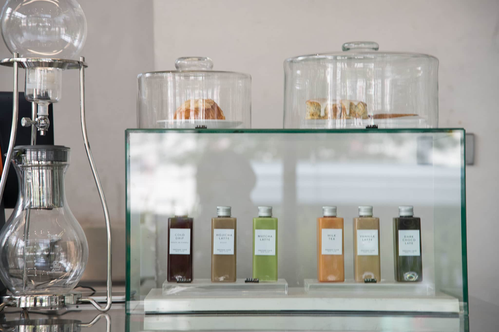
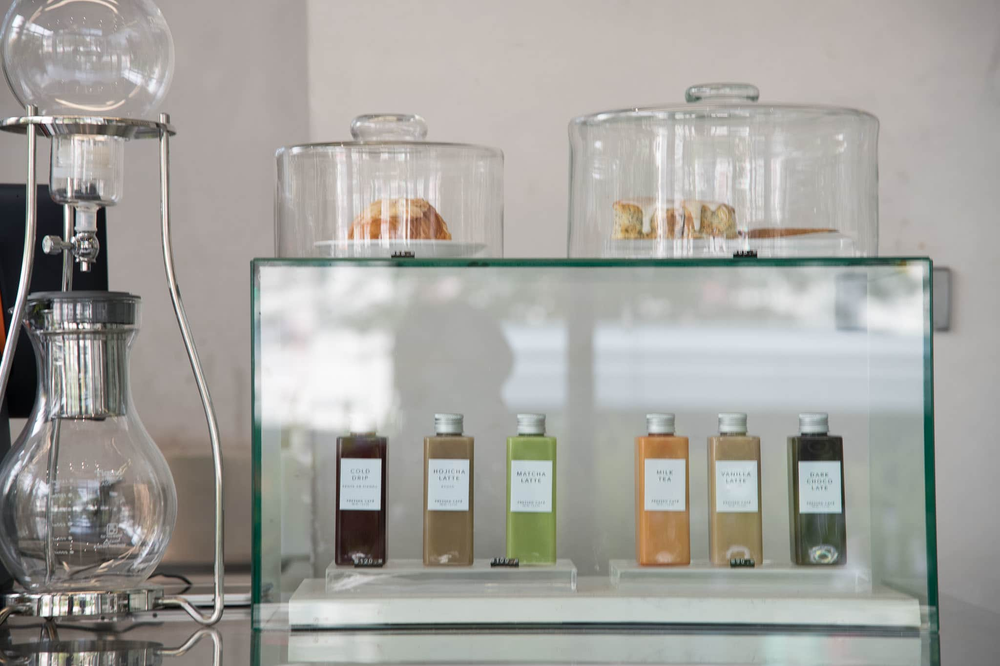

ABOUT US
เริ่มจากที่หลายๆร้านมีเมนูที่คิดเองโดยทางร้านเองเป็นส่วนใหญ่ และมีสูตรหรือเมนูที่ตายตัวของแต่ละร้าน ร้านของเราเลยลองเปลี่ยนแนวโดยสามารถให้ลูกค้าสามารถผสมเครื่องดื่มได้เอง
และชูให้เป็นเอกลักษณ์ของร้านเรา ชื่อ Mixed cafe ก็คือได้มาจากคอนเซปของร้านนั่นเอง
ซึ่งร้านของเราก็เป็นการรวมตัวของกลุ่มเพื่อนที่ชอบไปนั่งตามคาเฟ่ต่างๆและได้คุยกันและได้ร่วมกันสร้างร้านนี้ออกมา


 
